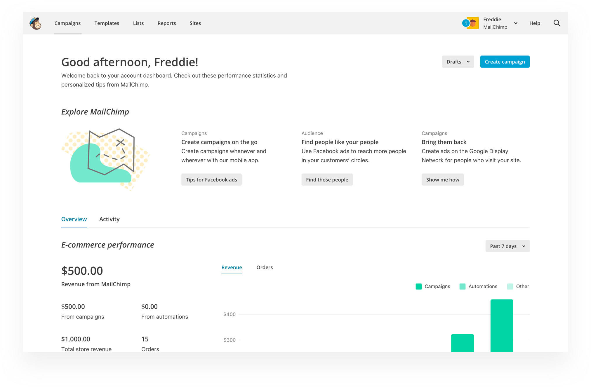

My role
UX/UI Design, Prototyping
Platform
Web
Tools
Sketch, Framer
Timeline
February 2018 - April 2018
Background
The problem
A large majority of users came to MailChimp’s homepage and jumped immediately to other pages. Meanwhile, many users were unaware of our marketing automations and new features. Our dashboard did not address our user’s biggest need, which is to take immediate actions to improve their business.
THE DASHBOARD BEFORE REDESIGN
Our users
Our users are busy small business owners, and they are not experts in marketing. They believe that they aren’t using MailChimp to its fullest potential, but they have no time to learn from articles. They want us to give them prioritized, personalized and achievable actions.
Key question
How might we help our users know what they should do in MailChimp, and easily take action on what we recommend they do?
Scope
To solve this problem, we’ll need an ecosystem. The homepage is only one of the many touch points, but it provides a persistent home base. It is highly discoverable and easily manageable.
Success metric
The percentage of users who start trying recommendations from the homepage.
Design
Before we started the project, we created three design principles that guided the design decisions —
- 1.
Simple and efficient. Design should help users understand what the recommendations are in a short span of time.
- 2.
Relevant and useful. Users shouldn’t see anything they have already set up or irrelevant to their needs.
- 3.
Delightful. Design should not be tedious or overwhelming.
We brainstormed and narrowed down our directions to three concepts. We then showed the three medium-fidelity design mockups to users for only 5 seconds each to mimic the real environment.
The results showed that the banner ad version had the most positive emotional reactions. Users love our brand. However, they didn't recall the contents very well. On the other side, the trimmed-down list had the best content recall rate and users loved the simplicity. In the end, we decided to combine both approaches to achieve good content recall and emotional resonance.
THE FINAL DESIGN DEMO
Some rationales behind our decisions —
- 1.
Users love our brand. We want to build an emotional connection with users using our brand assets.
- 2.
We want to prioritize the one recommendation that has the highest value and lowest effort to set up instead of exposing all at one time.
- 3.
When users have items in progress, we want to shift priority to remind users to finish them first before starting setting up new features.
- 4.
We want to make the design very simple, easy to understand and actionable.
Results
Two months after we launched the beta version, we know that the beta does not test well. Although it fails, we’ve learned a lot from conducting this project.
In the beginning, we defined this project as continuous onboarding (in-app education for existing users), without realizing that it is actually more complicated and it’s better solved with the growth mindset. We should have been more nimble and taken small steps. Growth is about gaining small wins from a series of nimble experiments.
Besides, we were trying to solve two problems at the same time. One was to fix the problem of the current dashboard, and the other was to increase feature adoption. Our solution was to add recommended features on a dashboard that has been normally ignored by users. If I had a chance to redo this project, I would focus on making the current dashboard more useful before running feature adoption experiments on it.
My biggest takeaway is to think more critically of all the information and ask more questions to make sure we are solving the right problem before diving into the problem.
Special thanks to Carrie Heffner(Research) for her hard work on this project.